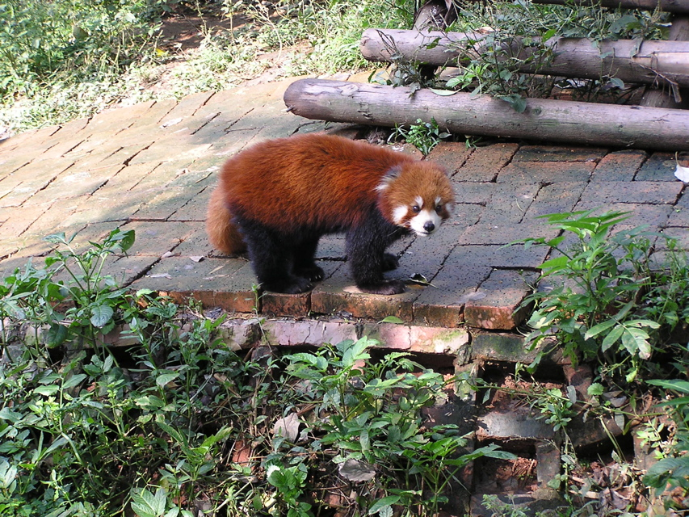

<--Previous Up Next-->

Lesser panda
Before I really got to work on it I found the two other panda fabrics used. Though it seems to show traditionally black and white style pandas the rust and black is especially appropriate since it is the coloration of the lesser pandas also resident at the sanctuary. This fabric is prominent on the left sleeve and lower portion of the back of the jacket.